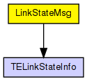
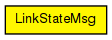

Packet for disseminating link state information (TELinkStateInfo[]) by the LinkStateRouting module which implements a minimalistic link state routing protocol.
The following diagram shows usage relationships between types. Unresolved types are missing from the diagram.
The following diagram shows inheritance relationships for this type. Unresolved types are missing from the diagram.
| Name | Type | Description |
|---|---|---|
| linkInfo | TELinkStateInfo[] | |
| request | bool |
if true, receiver is expected to send back its own link state database to the sender --FIXME really needed? bool ack = false; -- apparently unused, removed -- TODO check with Vojta |
| command | int |
FIXME maybe do without this... |
// // Packet for disseminating link state information (TELinkStateInfo[]) by the // LinkStateRouting module which implements a minimalistic link state routing // protocol. // packet LinkStateMsg { TELinkStateInfo linkInfo[]; bool request = false; // if true, receiver is expected to send back its own link state database to the sender --FIXME really needed? // bool ack = false; -- apparently unused, removed -- TODO check with Vojta int command = LINK_STATE_MESSAGE; // FIXME maybe do without this... }